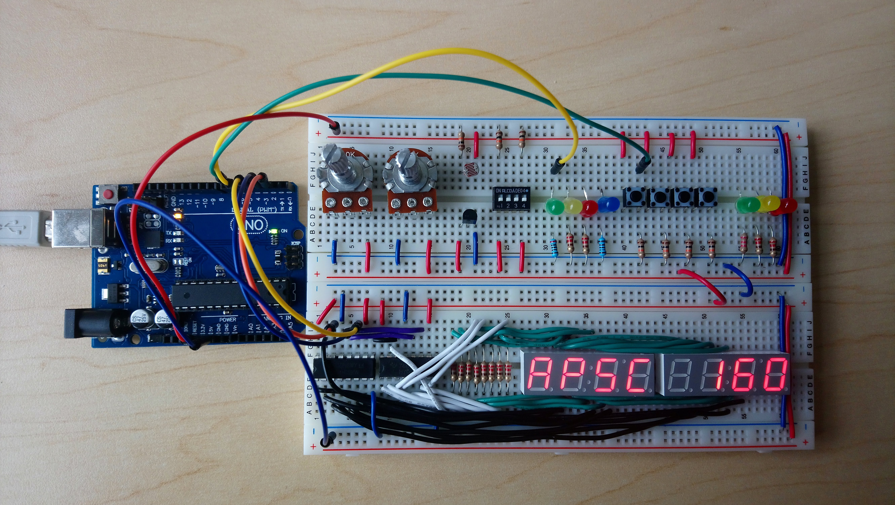
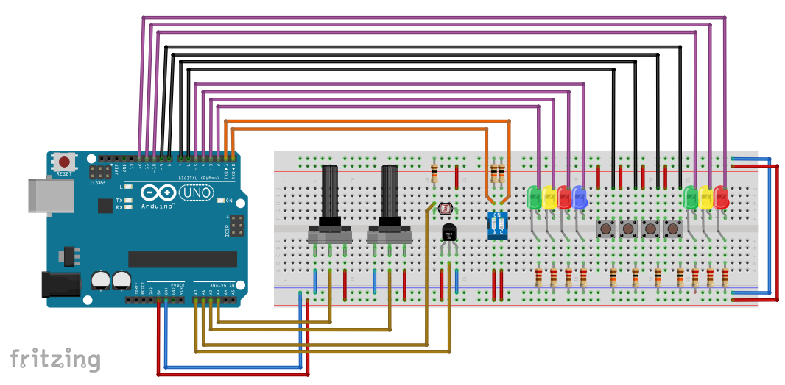
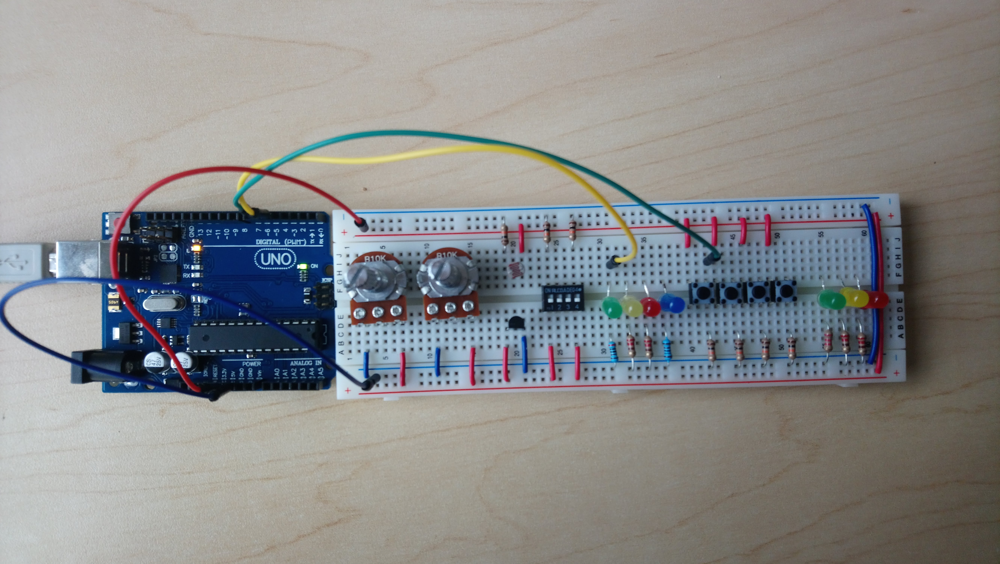
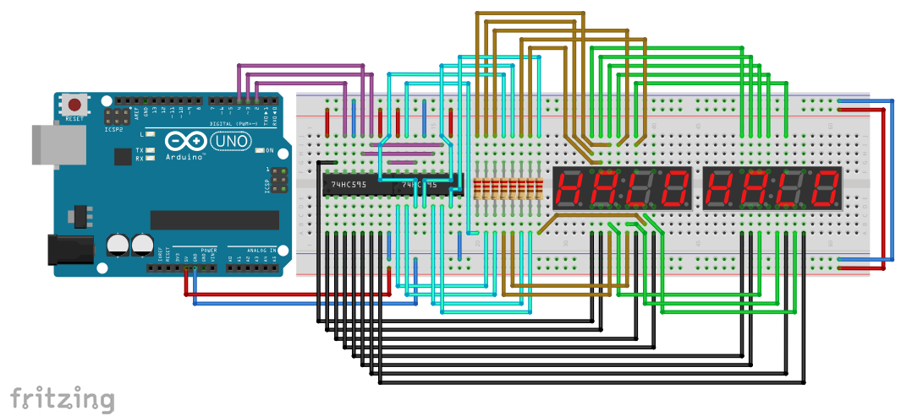
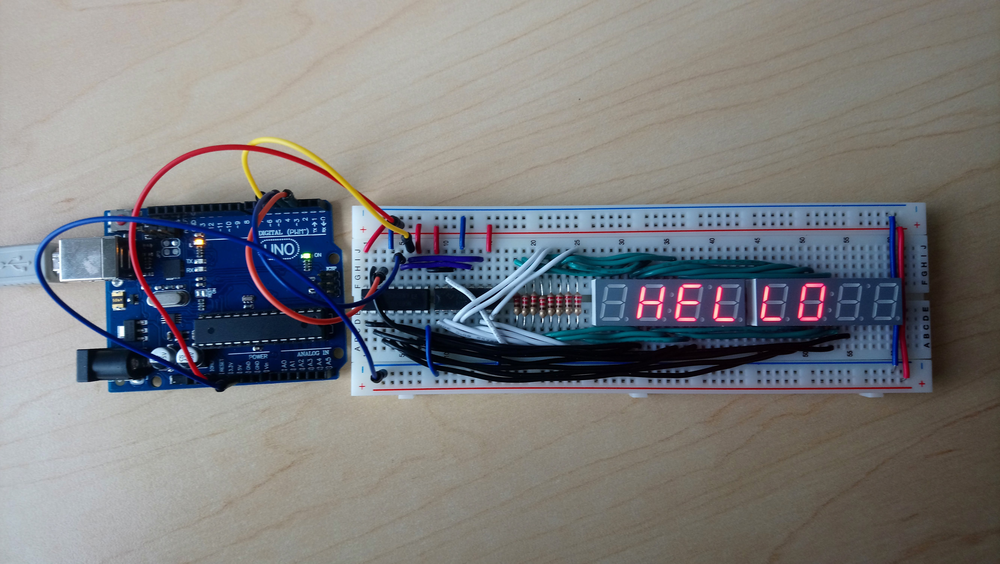
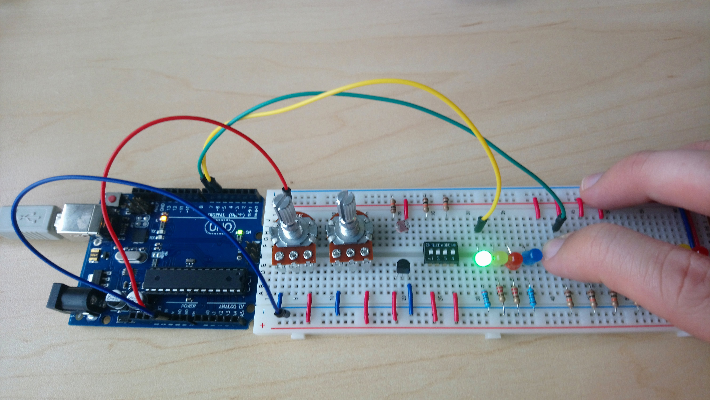

This section is completely optional. You do not need to know anything related to hardware, electronics, or Arduino for this course.
Having said that, this stuff is extremely fun, will give you something hands-on to work with while learning to program, and can be very useful in later years for your engineering design projects. If you are at all interested in getting started, I strongly encourage you to give Arduino a try. There are many tutorials out there that cover the basics.

To develop for the Arduino Platform, you will need an Arduino or equivalent board (e.g. Uno Rev3), as well as some electronic components. A few boards are available to borrow from the UBC library. Otherwise, you can find cheap knock-offs that are often bundled with a starter set of components for around $30 online. They will also usually include a set of sample projects to help you get started.
Below are two sample circuit schematic layouts that will allow you to implement many programs similar to those from the in-class exercises. You do not need to copy these designs directly. For example, if you bought a kit that comes with a single potentiometer or 4 digit 7-segment clock display, then that will be sufficient to get started.
For a given program, you may want to only connect certain inputs/outputs to the board. If you build both schematics, you can even attach parts of each to the Arduino, such as the displays from schematic 2 and the potentiometers from schematic 1 in order to mimic the DAQ. The wiring to the Arduino board pins are simply to demonstrate where to connect the wires from. You may choose whichever pins to use as you like.
Important: note the various resistors in the schematics below. Never connect a power source directly to the two ends of an LED. LEDs can only support a certain amount of current (typically around 30 mA) before they burn out. This is why they are always connected in series with a "choke" resistor. You can estimate the minimum resistance required using the relationship: $$R = V/I$$ For a 5V supply (e.g. from the Arduino Uno), and current of 30mA, you will need a resistance of about 5/0.03 = 167 Ohms. If you use a 9V battery directly, you will need 9/0.03 = 300 Ohms. This is usually why tutorials will tell you to use a 220 Ohm or 330 Ohm resistor, depending on your power supply. The 10 kOhm resistors attached to the buttons and analog inputs are being used as pull-down resistors, pulling the output voltage down to zero when the various switches are "open".
Each group of 5 vertical holes in the middle section of the breadboard are internally connected, allowing you wire together components. The two long horizontal lines at the top/bottom of the breadboard are also connected, forming "power rails". You should usually attach the high voltage to the red line, and ground to the blue line. Some breadboards are disconnected at the half-way point along the power rail, usually marked by broken red/blue lines.
Also ensure the wiring of your components match their specifications. For some components like resistors/potentiometers, the orientation does not matter. However, for others like the temperature sensor, accidentally connecting the component backwards can damage the component and lead to a fire hazard. Keep an eye on the temperature sensor. If it starts heating up quickly, it's in backwards.
When purchasing components, you may wish to buy a few extras in case something goes wrong, particularly for the LEDs which can easily burn out if there is a wiring error. It is also useful to have extra resistors in case you want to change your design, or increase/decrease the resistance. Look for components that specifically state they are for breadboards, or they have a through-hole mount.
The following layout contains two types of digital switches, a temperature sensor, light sensor, two potentiometers, and several LEDs to practice both digital and analog I/O.
  Fritzing schematic: apsc160_sensors.fzz| Component | Count |
|---|---|
| Full Size Breadboard | 1 |
| Rotary Potentiometer (approx. 10 kOhm, Linear) | 2 |
| Photoresistor (approx. 10 kOhm - 30 kOhm) | 1 |
| Temperature Sensor (TMP36 or LM35) | 1 |
| Slide DIP Switch (2 or 4 positions) | 1 |
| Tactile Switch | 4 |
| LEDs (5 mm Round, Various) | 7 |
| 220 Ohm Resistor | 7 |
| 10 kOhm Resistor | 7 |
| Spindle of Wire (22 Gauge Solid) | 1 |
This layout contains eight 7-segment displays, similar to the the DAQ module. Instead of connecting to the displays directly and using up 24 I/O pins (the Arduino Uno only has 19 I/O pins), this circuit uses two shift registers to "shift out" up to 16 digital values using a sequence of pulses over only three pins. The other 8 pins of one 4-digit clock display are connected directly to the other display. Due to this wiring, we can actually only turn on one of the eight displays at a time. However, by quickly cycling through them at a rate of faster than 60 Hz, it can look like they are all on at the same time.
  Fritzing schematic: apsc160_display.fzz| Component | Count |
|---|---|
| Full Size Breadboard | 1 |
| Shift Register (74HC595, 14-DIP) | 2 |
| 4 digit 7-Segment LED Clock Display (Common Anode) | 2 |
| 220 Ohm Resistor | 8 |
| Spindle of Wire (22 Gauge Solid) | 1 |
For development, you can either use the Arduino IDE, or the free Visual Micro plugin for Visual Studio. Though for the Visual Micro plugin to work, you must first install the Arduino IDE anyways.
.ino extension instead of a .c extension.
It has two standard functions:
/* the setup function runs once when you press reset or power the board */
void setup(void)
{
/* initialize Arduino */
}
/* the loop function runs over and over again until power down or reset */
void loop(void)
{
/* super loop body */
}The setup function is where we configure the board, telling it which pins are inputs and which are ouputs, and where we initialize any global variables.
The loop function is the body of the main super-loop. It is called over and over again until the device is powered off.
Note that there is no main() method. The details of
this method are hidden from you. It essentially performs the following,
int main(void)
{
setup();
while (TRUE) {
loop();
}
return 0;
}along with some other initialization and cleanup tasks.
There are no headers included by default. Note that neither
stdio.h nor stdlib.h
exist for the Arduino.
int digitalRead(int pin) - reads from a digital input pinvoid digitalWrite(int pin, int val) - writes to a digital output pinint analogRead(int pin) - reads from an analog input pinunsigned long millis(void) - time since Arduino was turned on or resetvoid delay(unsigned long ms) - sleep for a given time in msanalogRead() function
returns an integer instead of a double.
The returned value is in the range [0, 1023]. To convert this to a voltage
in the range of [0V, 5V], you can use
$$\mathrm{voltage} = \frac{5}{1023}\mathrm{analog\_value}$$
Also note that there is no setupDAQ() or continueSuperLoop()
function. Instead of initializing a pre-set configuration like with setupDAQ(),
we need to manually configure our pin layout using the
void pinMode(int pin, int mode)
function. For example, we can configure certain pins to be inputs and outputs using
void setup(void)
{
pinMode(2, OUTPUT); /* digital pin 2 as output */
pinMode(3, INPUT); /* digital pin 3 as input */
pinMode(A2, INPUT); /* analog pin A2 as input */
}continueSuperLoop(), the device is already configured
to continue calling your loop() function until it is
powered off.
Since the Arduino does not come with a standard 7-segment display,
there is also no displayWrite() function either. You
must create one yourself based on the schematics of the display
components you choose and how you connect them to your circuit.
If you build the Schematic 2 circuit, then you
can add the following header and source file to your project to
add the displayWrite() functionality:
To add these files to your program in the Arduino IDE, download them somewhere known on your computer, and go to "Sketch > Add File...". In Visual Studio with Visual Micro, right-click on the project and select "Add > Existing Item..." to add the two files.
Once the files are added to the project, you need to include the
DisplayWrite.h header in your sketch. Since you are
including a custom file with a relative location, you must use
quotes for the include statement instead of angle brackets:
#include "DisplayWrite.h"
You will also need to configure the pins that the Arduino should use.
The shift registers require three pins: a data
pin for sending values, a clock pin to shift the data out
one bit at a time, and a latch pin to tell the shift
registers that the next set of values are ready to be sent
to the displays. The configuration should be performed in the
setup() function:
void setup(void)
{
setupDisplay(DATA_PIN, LATCH_PIN, CLOCK_PIN);
}
On the circuit layout provided, DATA_PIN is pin 2, LATCH_PIN
is pin 3, and CLOCK_PIN is pin 4. Once connected and initialized,
you can use the void displayWrite(int data, int pos)
function just as for the DAQ.
Based on parts of the Schematic 1 circuit layout, connect an LED to pin 5, and a push-button to pin 6. Create a sketch with the following code:
Compile and upload your sketch to the Arduino (Build in Visual Studio, or Verify/Compile and Upload in the Arduino IDE).
Once the program starts running, you should be able to push the button to turn on the LED!! We could have accomplished the same thing without programming by connecting a wire directly from the button to the LED, but where's the fun in that?
Based on parts of both the Schematic 1 and Schematic 2 circuits, connect an LED to pin 5, a push-button to pin 6, and the 7-segment displays to pins 2, 3, and 4. Create a sketch with the following code:
Compile and upload to the Arduino (Build in Visual Studio, or Verify/Compile and Upload in the Arduino IDE).
This should do the same as the first program (button lights up LED), but it should also print a message to the displays.